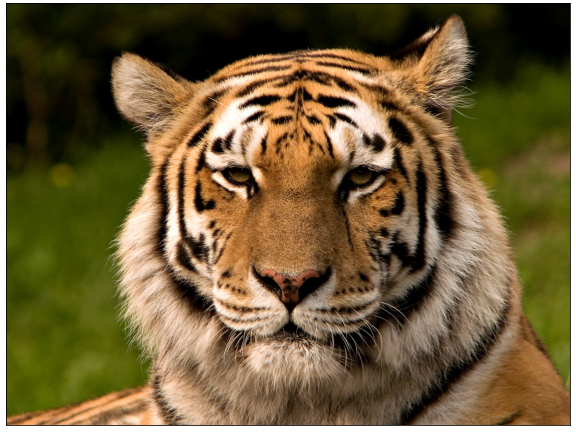

- 이미지를 처리하는 파이썬 라이브러리는 많습니다.
- 가장 잘 알려진 opencv와 pillow를 비롯해서 matplotlib도 이미지 처리를 합니다.
- colorsys라는 파이썬 기본 라이브러리가 있습니다.
- 색 공간을 변환하는 라이브러리인데, 이것만 잘 써도 할 수 있는 게 많습니다.
1. 예제 이미지
- 예제로 사용할 이미지를 가져옵니다.
- 호랑이 해이니 호랑이 사진을 사용해 보겠습니다.
- 저작권 걱정이 없는 wikimedia에서 사진을 내려받아
tiger.jpg라고 저장합니다.

2. Python에서 읽기
먼저 기본 라이브러리를 부르고
1
2
3
4
5%matplotlib inline
import matplotlib.pyplot as plt
import seaborn as sns
import numpy as np이미지를 불러옵니다.
plt.imread()명령으로 읽은 이미지는 numpy array로 저장됩니다..shape으로 dimension을 확인하면 1200 x 1600 x 3입니다.세로 1200, 가로 1600의 3차원(RGB) 이미지입니다.
1
2
3
4
5
6
7img_org = plt.imread("tiger.jpg")
print(img_org.shape)
fig, ax = plt.subplots(figsize=(8, 6), constrained_layout=True)
ax.imshow(img_org)
ax.set_xticks([])
ax.set_yticks([])실행 결과
1
(1200, 1600, 3)

3. CIELab color space
사람이 인지하는 밝은 정도, 즉 휘도(luminance)를 파악합니다.
그림을 구성하는 RGB를 [colorspacious] 라이브러리의
cspace_converter를 사용해 CIELab 색공간으로 변환합니다.CIELab 색공간의 첫번째 채널이 $L^*$, 즉 휘도입니다.
1
2
3
4
5
6
7
8
9
10
11# convert to CIELab
from colorspacious import cspace_converter
img_lab = cspace_converter("sRGB1", "CAM02-UCS")(img_org/255)
print(img_lab.shape)
img_L = img_lab[:,:,0]
fig, ax = plt.subplots(figsize=(8, 6), constrained_layout=True)
ax.imshow(img_L, cmap="gray")
ax.set_xticks([])
ax.set_yticks([])실행 결과
1
(1200, 1600, 3)
흑백 사진으로 변환되었습니다.
여기 보이는 회색조가 우리 눈이 느끼는 밝기입니다.
4. HLS color space
HSV (hue, saturation, value) 색공간과 더불어 HSL, 또는 HLS 색 공간이 사용됩니다.
색상(hue)과 명도(lightness), 채도(saturation)를 따로 조정할 수 있다는 장점이 있습니다.
python에 기본으로 내장된
colorsys라이브러리는 색 공간 변환에 충실합니다.RGB, YIQ, HLS, HSV 공간을 오가는 기능을 간단하게 제공합니다.
호랑이 이미지를 HLS 공간으로 바꾸어 hue, lightness, saturation 분포를 확인합니다.
1
2
3
4
5
6
7
8
9
10import colorsys
img_hls = np.array([colorsys.rgb_to_hls(*c) for c in (img_org/255).reshape((1600*1200, 3))]).T
print(img_hls.shape)
fig, axs = plt.subplots(ncols=3, figsize=(8, 4), constrained_layout=True)
for i, (title, ax) in enumerate(zip(["hue", "lightness", "saturation"], axs)):
sns.histplot(img_hls[i], kde=True, bins=np.linspace(0, 1, 21), ax=ax)
ax.set_title(title, fontsize="xx-large", pad=8)lightness를 보면 어두운 부분이 많은 것 같고,
saturation을 보면 원색에 가까운 비중이 상당히 높습니다.
hue가 좀 독특한데, 왼쪽에 몰려 있습니다.
잘못 처리한 것이 아닌지, hue의 숫자가 의미하는 색을 출력합니다.
1
2
3
4
5
6
7
8
9
10# hue check
hues = np.linspace(0, 1, 21)[:20]
rgbs = list(map(colorsys.hls_to_rgb, *np.array([[h, 0.5, 1] for h in hues]).T))
fig, axes = plt.subplots(ncols=10, nrows=2, figsize=(10, 3), constrained_layout=True)
for ax, rgb, hue in zip(axes.ravel(), rgbs, hues):
ax.set_facecolor(rgb)
ax.set_xticks([])
ax.set_yticks([])
ax.set_xlabel(f"{hue:.2f}", fontsize="x-large", labelpad=12)히스토그램에서 hue가 몰려 있는 0.25 아래 부분은 빨강, 주황, 노랑, 연두입니다.
호랑이와 들판을 이루고 있는 색입니다. 그럴 만 하네요. 정상입니다. :)
호랑이 그림에서 hue, lightness, saturation이 어떻게 분포하고 있는지를 봅니다.
1
2
3
4
5
6
7
8
9fig, axs = plt.subplots(ncols=3, figsize=(8, 3), constrained_layout=True)
for i, (title, ax) in enumerate(zip(["hue", "lightness", "saturation"], axs)):
vmax = 0.3 if i == 0 else 1
im = ax.imshow(img_hls[i].reshape(1200, 1600), cmap="rainbow", vmin=0, vmax=vmax)
plt.colorbar(im, orientation="horizontal", ax=ax)
ax.set_xticks([])
ax.set_yticks([])
ax.set_title(title, fontsize="xx-large", pad=8)hue만 범위를 0-0.3으로 그리고 나머지는 0-1로 그렸습니다.
범위를 쉽게 파악하고자 의도적으로 rainbow colormap을 사용했습니다.
배경과 호랑이는 hue와 lightness로 쉽게 구분됩니다.
배경 일부에 호랑이와 hue가 같은 구간이 있는데 lightness를 섞으면 같이 구분할 수 있습니다.
lightness threshold를 0.4로 고정하고
hue threshold (
h_th)를 0.1~0.3으로 바꾸면서 호랑이 선택 범위를 확인합니다.1
2
3
4
5
6
7
8
9
10
11
12
13
14
15# tiger selection
from copy import deepcopy
img_hls_tiger = deepcopy(img_hls)
fig, axs = plt.subplots(ncols=3, figsize=(8, 3), constrained_layout=True)
h_ths = [0.1, 0.2, 0.3]
for h_th, ax in zip(h_ths, axs):
chk_tiger = np.where((img_hls[0] < h_th) & (img_hls[1] > 0.4), 1, 0)
ax.imshow(chk_tiger.reshape(1200, 1600), cmap="gray")
ax.set_xticks([])
ax.set_yticks([])
ax.set_title(f"{h_th}", fontsize="xx-large", pad=8)다른 데는 비슷한데 호랑이 이마와 왼쪽 뺨에서 차이가 보입니다.
0.3으로 올리면 얼굴은 검은 줄무늬를 제외하고 거의 선택이 되고 배경으로 넘어가지 않네요.
hue threshold를 0.3으로 설정합니다.
1600 x 1200개의 픽셀 중 hue는 0.3 미만, lightness는 0.4 초과하는 범위를 잡습니다.
호랑이 얼굴의 명도는 올리고 채도는 낮춰서 하얀 장로 호랑이 느낌이 들도록 바꿉니다.
사실 올해가 검은 호랑이 해라 검게 하고 싶었는데 어떻게 해도 안예쁘더군요.1
2
3
4
5
6
7
8
9
10
11
12idx_tiger = np.where((img_hls[0] < 0.3) & (img_hls[1] > 0.4))[0]
for idx in idx_tiger:
img_hls_tiger[1, idx] = min(img_hls_tiger[1, idx]+0.6, 1)
img_hls_tiger[2, idx] = max(img_hls_tiger[2, idx]-0.6, 0)
img_rgb_tiger = np.array([colorsys.hls_to_rgb(*c) for c in img_hls_tiger.T])
fig, ax = plt.subplots(figsize=(8, 6), constrained_layout=True)
ax.imshow(img_rgb_tiger.reshape(1200, 1600, 3))
ax.set_xticks([])
ax.set_yticks([])호랑이 해 모두 새해 복 많이 받으시기 바랍니다.